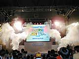
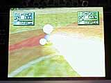
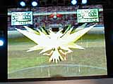
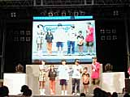
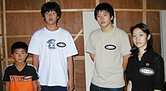

 「ポケモンスタジアム金銀クリスタル（仮称）エキシビジョンマッチ」の２日目。今日は土曜日とあって子どもづれのお客さんもいっぱい。トレーナーたちの華麗なプレーを見たい、そして新しい『ポケモンスタジアム』の画面を見たい、というお客さんがステージ前にたくさんつめかけています。初日以上の盛り上がりに、司会者もやや興奮気味。
そんな熱気の中、幕をあけたエキシビジョンマッチ午後の部。出場者は青木幸文くん、浜田知彦くん、児玉望生くん、藤田美蘭さん。みんなすごい実績の持ち主だけど、注目は第一回目のポケモンリーグで優勝した藤田さんの戦い。どんなバトルを見せてくれるか、楽しみです。 |
戦いのゴングが鳴り、１回戦は青山くんＶＳ藤田さんが登場です。青木くんが選んだポケモンはハガネールです。藤田さんはサンダース。ここで、会場の小さい子たちからも歓声があがります。人気のポケモンは、登場するだけでわっと会場がわくみたいですよ。しかし、ここで藤田さんはサンダースをヘラクロスに変更。サンダースとハガネールのバトル開始です。その後、青木くんもハガネールをサンダースに変更。２人ともなかなか戦略家ですね。藤田さんはどうぐをうまく使ってダメージを回復し、着実にゲームを進めます。最後はレベル55のカビゴンを投入。青木くんはハピナスの「ちきゅうなげ」で健闘しましたが、藤田さんの秘蔵っ子・カビゴンの前に倒れてしまいました。
 さて、２回戦はちびっこポケモントレーナー児玉くんと、浜田くんの対決。まずは児玉くんのわたっこと浜田くんのサンダーのバトルです。浜田くんはリングに雨をふらせ、サンダーの「かみなり」で攻めます。児玉くんはバトルの途中でポケモンをライコウにチェンジ。珍しいポケモンの登場に、会場にはざわめきが走ります。両者とも、エントリーしてあるポケモンをうまくチェンジしながらねばり強い戦いを続けているようす。児玉くんのわたっこが「ソーラービーム」を出せば、浜田くんは「あまごい」で対抗と、お互いに一歩もゆずりません。制限時間のカウントダウンがはじまってもあきらめずに戦い続けましましたが、ここでタイムアウト。判定により浜田くんの勝利となりました。 |
|  いよいよ最終戦。藤田さん、浜田くんという強豪どうしのバトルです。藤田さんはサンダースを、浜田くんはサンダーを最初のポケモンに選びました。浜田くんはおとくいの「あまごい」→「かみなり」という攻撃でサンダーの能力を最大限にひきだします。一方、藤田さんのほうも相手をまひさせる攻撃で守りをかため、浜田くんの１匹めのポケモンを倒します。しかし、このあと浜田くんも藤田さんの１匹めのポケモンをみごと倒しました。お互い、残りのポケモンが２匹ずつになったところで、浜田くんのナッシー、藤田さんのカビゴンが戦います。浜田くんはナッシーを自爆させて捨て身の攻撃に出ますが、なんと藤田さんのカビゴンはこれを耐え、さらに「ねむり」で体力を回復。「のしかかり」攻撃で浜田くんの最後のポケモン、ハピナスを攻めます。ギリギリまで耐えたハピナスですが、藤田さんの戦略の前にダウン。藤田さんがみごと優勝しました。 |
|  制限時間ぎりぎりのバトルに会場もハラハラ。特に今回はどうぐをうまく使った攻撃や、ポケモンのチェンジを使った戦略がめだちました。優勝した藤田さんは「まひを使うのがポイントですね」と会場のみんなにアドバイス。女の子らしいキメ細かな作戦が、勝利を決めたようですね。ゲストのトランセル種市氏も「全国レベルの戦いかた」と感心していました。 |
| ２日目にふさわしい充実した内容だったエキシビジョンマッチ。藤田さんの戦いは、女の子のトレーナーにもはげみになったのではないでしょか。明日、最終日の戦いも楽しみですね。 |

左から、児玉望生くん、浜田知彦くん、青木幸文くん、藤田美蘭さん。
|